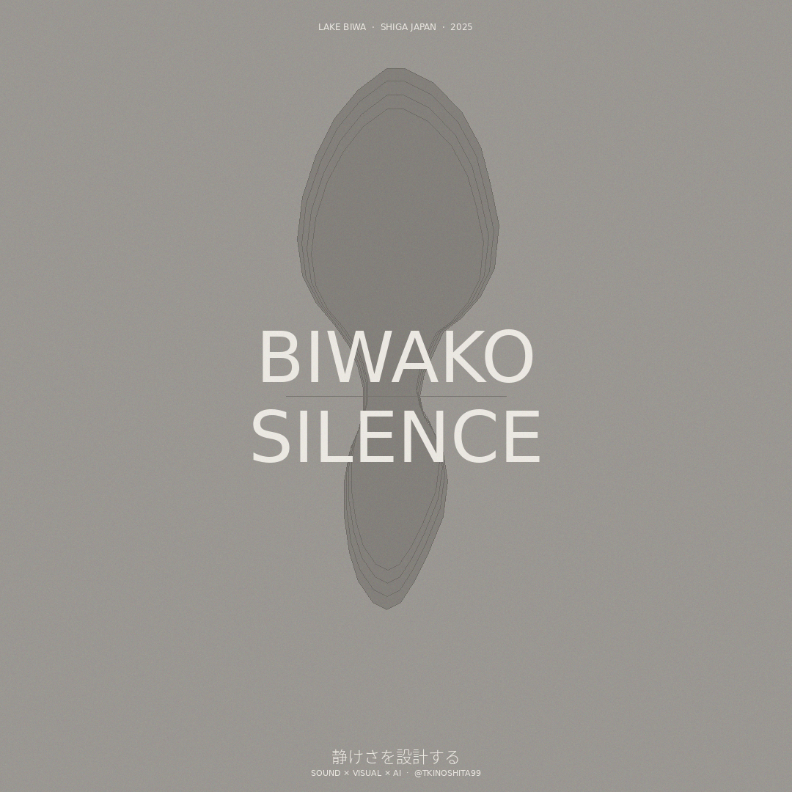
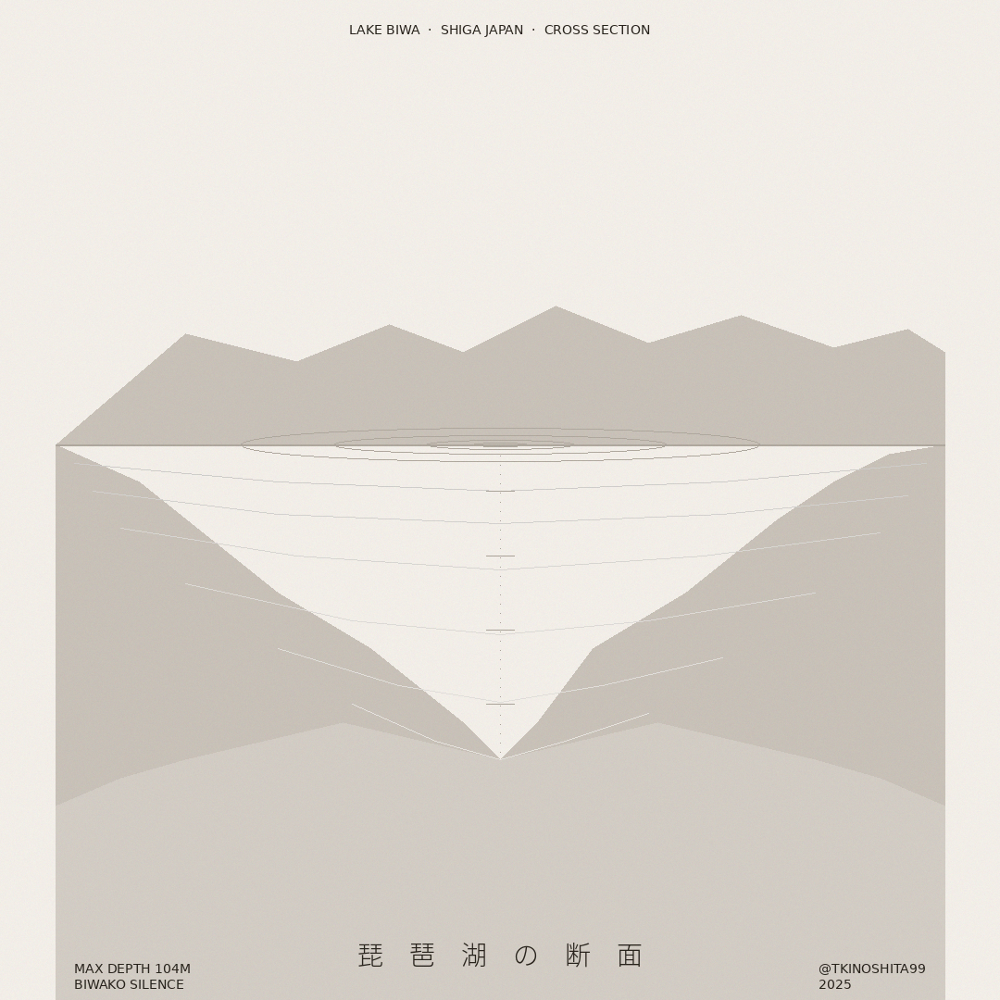
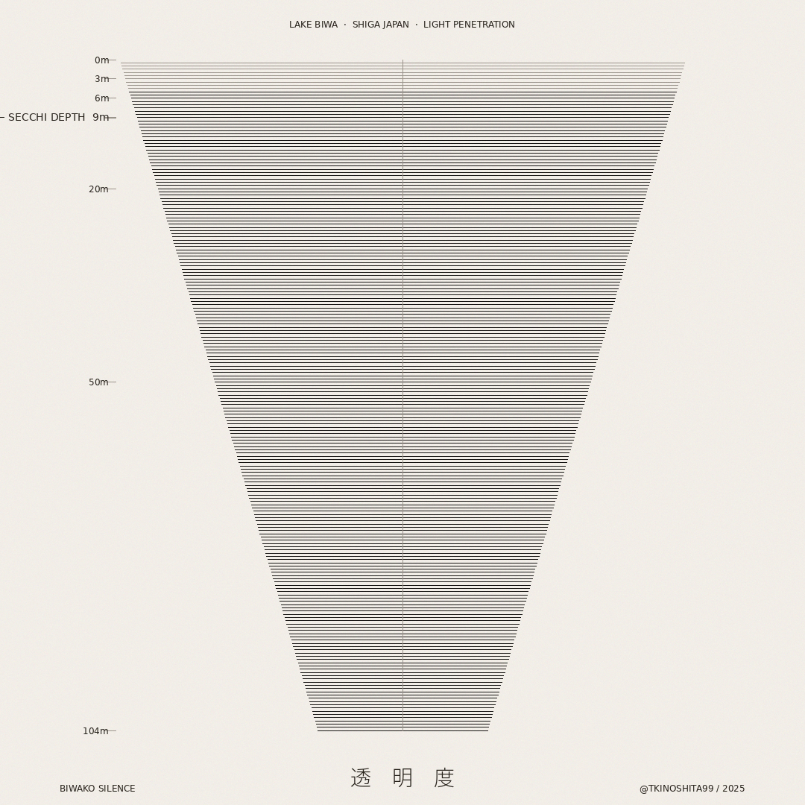
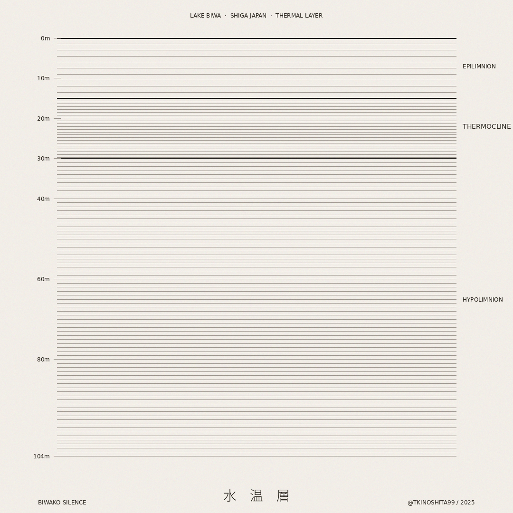
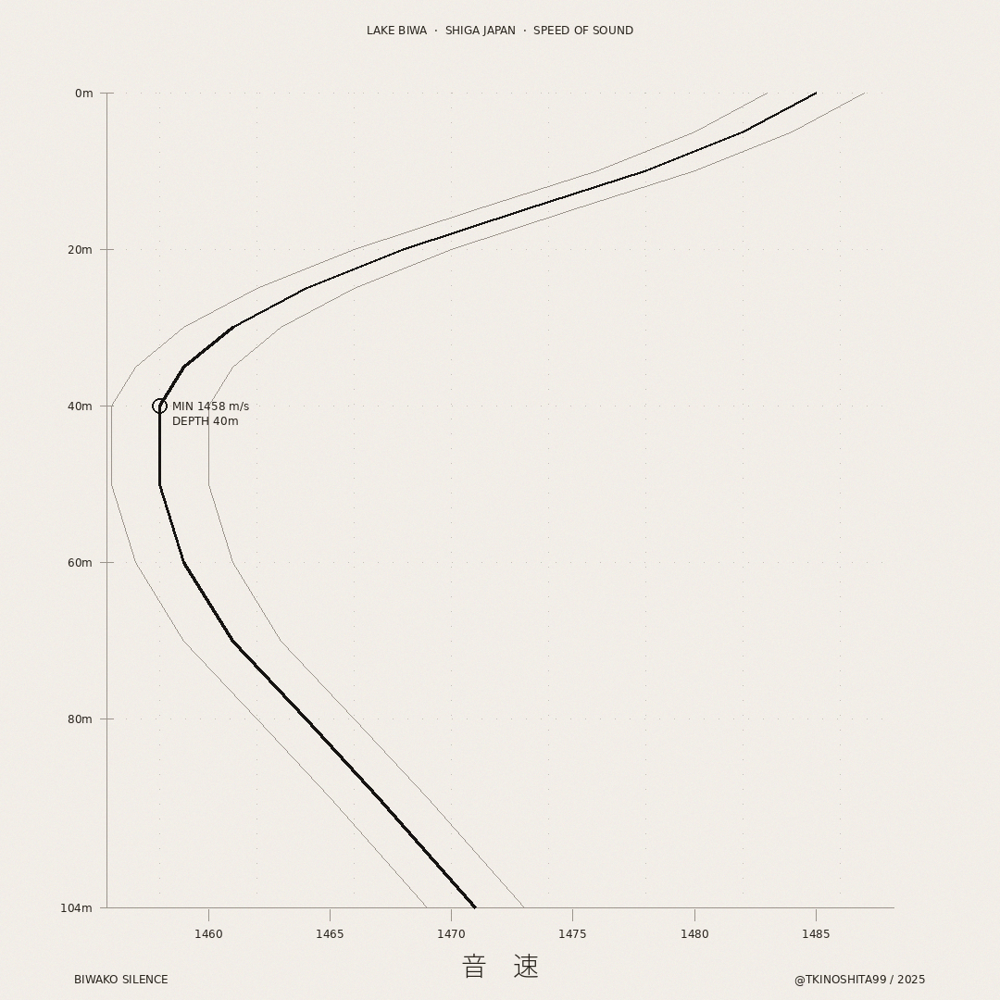
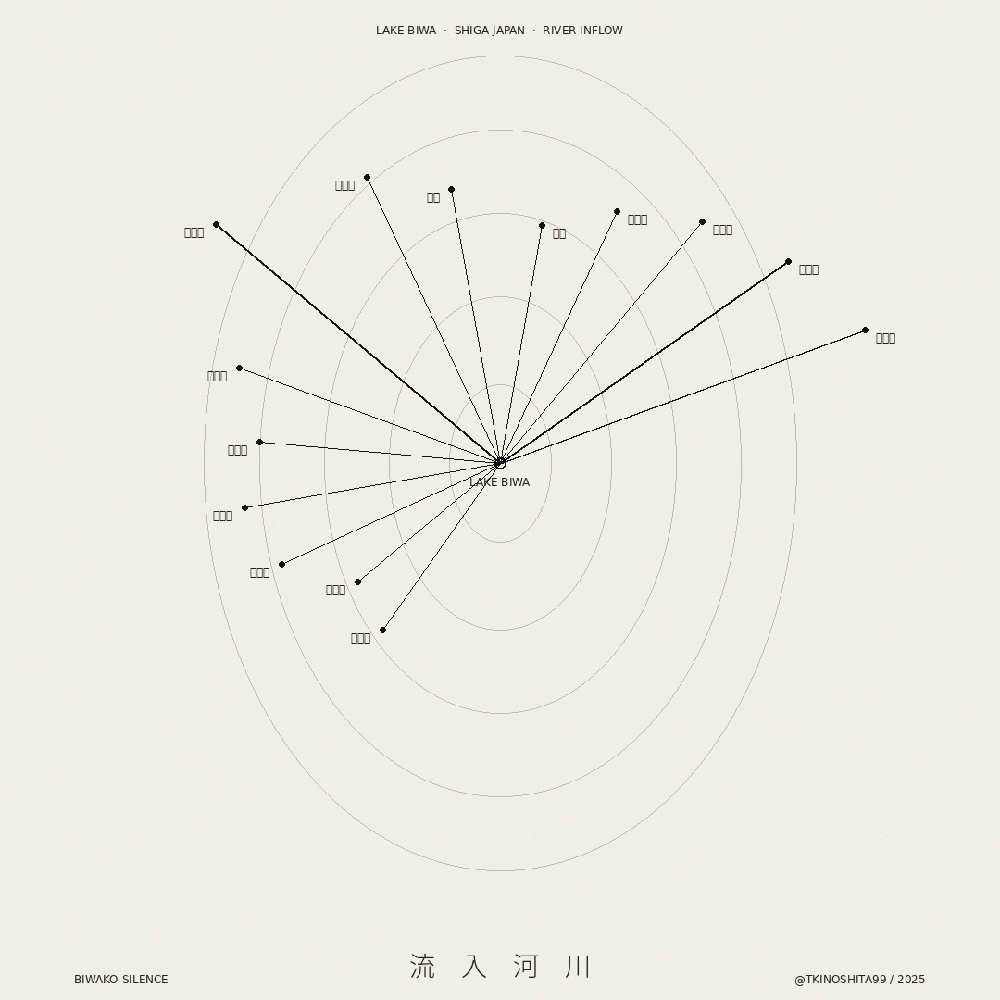
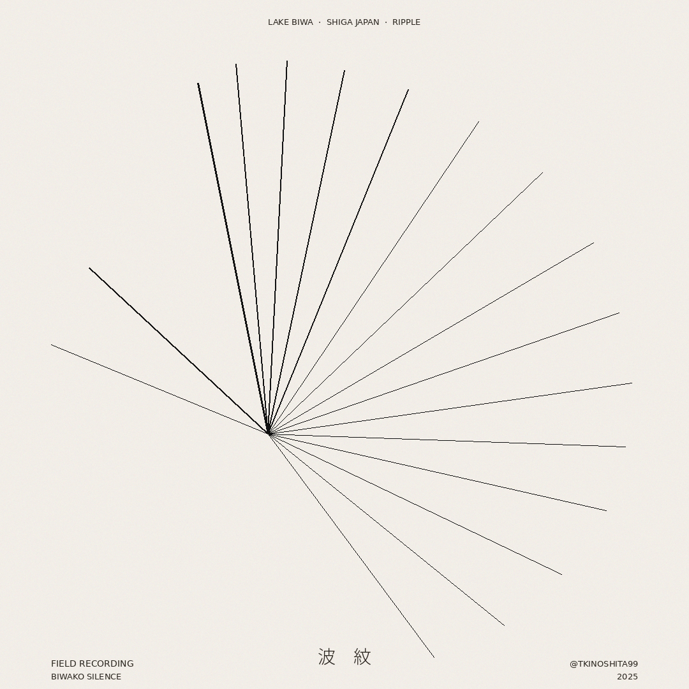
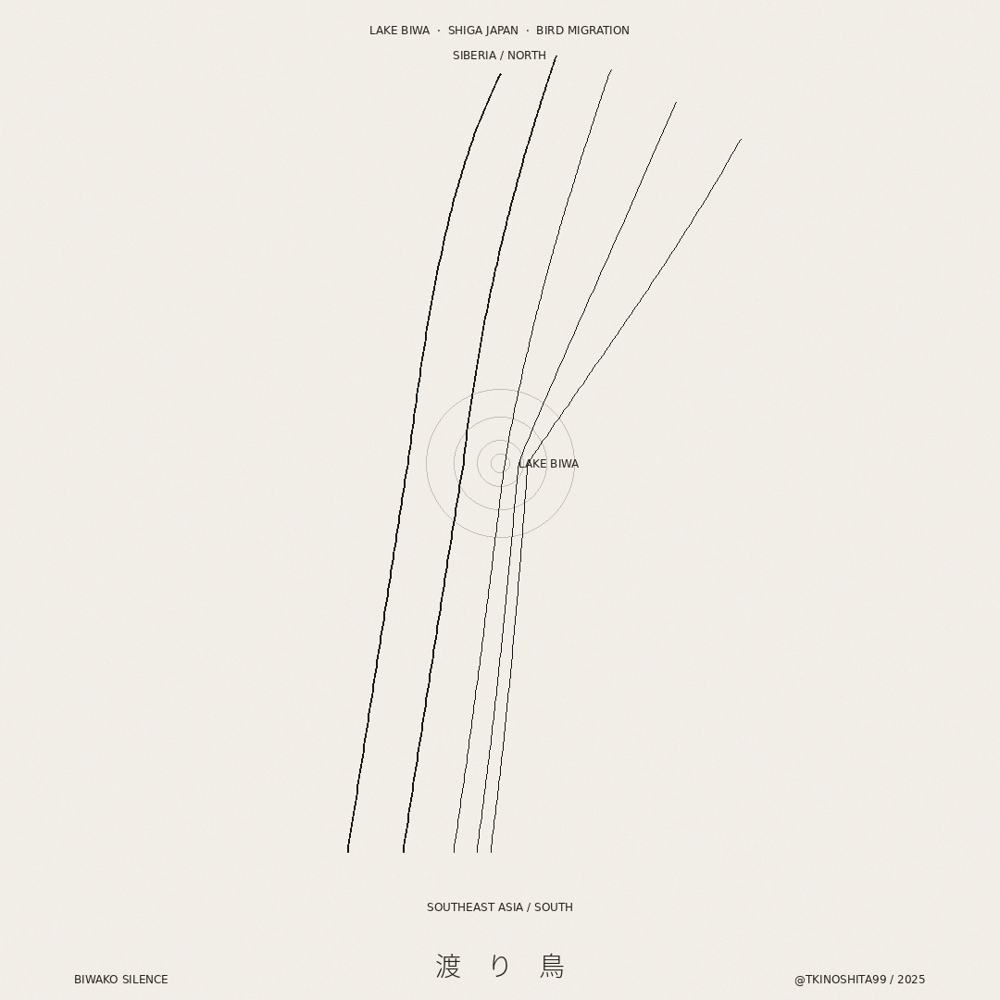
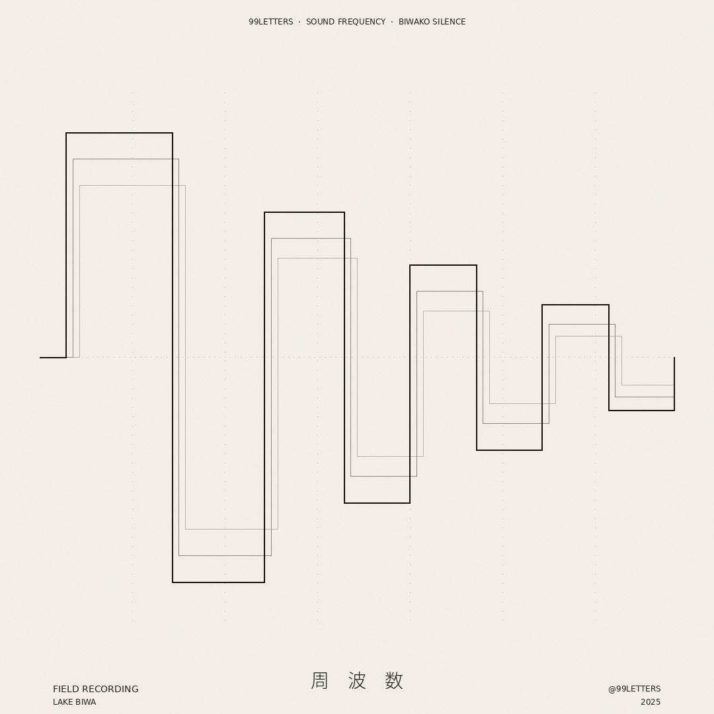

CASE 01 — DATA × VISUAL / 2026
BIWAKO SILENCE
The lake has always had a shape. No one had seen it yet.
琵琶湖の静けさをデータに変換し、
9枚のビジュアルシリーズとして設計した。
言語化できない体験を、視覚に翻訳する試み。
SCROLL ↓
OVERVIEW — 問いと概要
琵琶湖には深さ104mがある。水温の層があり、音速の変化があり、渡り鳥の飛来経路がある。しかし誰もその「形」を見たことがなかった。湖は「感じるもの」であり、「見るもの」ではなかった。
このプロジェクトは、その問いから始まった。データという客観的な事実を通じて、湖が持つ静けさと豊かさを視覚体験へと翻訳することはできるか。
水温・透明度・音速・流入河川・渡り鳥の飛来データ——それぞれのデータが持つ美しさを、グラフィックの言語で再構成した。9枚のシリーズは、琵琶湖への9つの問いかけである。
PROCESS — 翻訳の過程
INPUT — 原文
TRANSLATE — 翻訳
OUTPUT — 訳文
SERIES — 9枚の翻訳
それぞれのデータが持つ構造を、グラフィックの言語で再構成した。細線・余白・漢字という一貫した美学の中で、9つの異なる琵琶湖の顔が現れる。









DETAIL — 各作品の解説
01 / 09
CROSS SECTION
湖面の穏やかさの下に、
どれほどの深さがあるか。
琵琶湖の縦断面を地形データから再構成したビジュアル。山系と湖盆の関係、最深部104mへの降下が一枚の図として現れる。湖面の穏やかさの下に、どれほどの深さがあるかを初めて「見る」ための作品。
02 / 09
LIGHT PENETRATION
静けさとは、
光が届かない深さにある。
光がどこまで届くか——透明度（セッキー深度）のデータを水平線の密度に変換した。深くなるにつれて線が密集し、光が届かなくなる様子を視覚化。静けさとは、光が届かない深さにあることを示す。
03 / 09
THERMAL LAYER
湖が持つ、
見えない階層構造。
湖の水は深さによって温度が異なり、明確な層構造を持つ。表水層・水温躍層・深水層の三層を、線の強弱で表現。二本の太い黒線が境界を示し、湖が持つ見えない階層構造が浮かび上がる。
04 / 09
SPEED OF SOUND
音が最も「曲がる」層——
深さ40m、1458m/s。
水中での音速は深さと水温によって変化する。深さ40mで音速は最小値1458m/sに達する——それは音が最も「曲がる」層。静寂の中を音がどのように伝わるかを、曲線の軌跡として記録した。
05 / 09
RIVER INFLOW
琵琶湖は孤立した水域ではなく、
地域全体の集積点だ。
琵琶湖には118の河川が流れ込む。それぞれの流量と方位を放射状に配置し、湖が周囲の山系から水を集める様子を可視化。琵琶湖はひとつの孤立した水域ではなく、地域全体の集積点であることが見えてくる。
08 / 09
SOUND FREQUENCY
音楽と自然が交差するとき、
最も「耳」に近い作品になる。
99LETTERSとして制作したフィールドレコーディング音源の周波数分析。湖岸で録音した自然音の周波数分布を矩形の連なりとして表現。音楽と自然が交差するこのシリーズの中で、最も「耳」に近い作品。
INSIGHT — このプロジェクトから得たこと
01
データは感情を持てる
客観的な数値も、解釈と設計次第で感情を持つ。透明度のデータが「静けさ」になる瞬間——翻訳とは解釈の設計だ。
02
静けさには、形がある
言語化できないものでも、データを通じれば形にできる。見えなかったものを見えるようにすること——それが体験翻訳の本質。
03
余白が意味を作る
細線と広大な余白の中にこそ、琵琶湖の静けさが宿る。引き算のデザインは、そこにあるものではなく、そこにないものが語る。